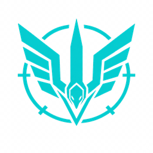

Falcon
Scout
by
Monitoring Upwork job pages
Last enriched
—
—
Open a job on Upwork — the extension extracts data and sends it to your local Falcon Scout dashboard automatically.
📄 Submitted proposal detected
📄
Go to proposal & capture
📩 Conversation capture
📩
Capture Conversation
Last captured
—
—
🐛 Last capture debug
📋 Copy